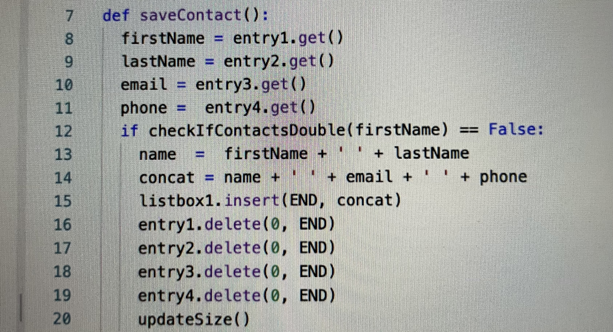

The purpose of this program is to save multiple contacts into a book/file. The video demonstrates a contact consisting of first name, last name, email, and phone number being saved to a file and then the file being saved into the contact book. The inputted address is then deleted and the book is reopened to show the previous saved contact. The input of the program is a first name, last name, email, and phone number (John, Doe, johndoe@gmail.com, 7777777777) and the output of the program is a saved contact in a book that can be reopened once deleted to view all the contact’s information. The list names are “listbox1” and “listContent”. The data contained in the list is represented by “listContent”. All of the stored contact information such as names, emails, and phone numbers is stored in listbox1 which can be reopened. The selected list manages complexity in my program because if the strings were not stored into listContent, then the user would not be able to save contact information and reopen it. If the strings were not stored anywhere, then buttons would not be able to do anything since the buttons save typed content or delete saved content that's in the “contacts.txt” file. If I did not use a list, then the program could be written with a bunch of if else statements, but that would become extremely long and repetitive.
